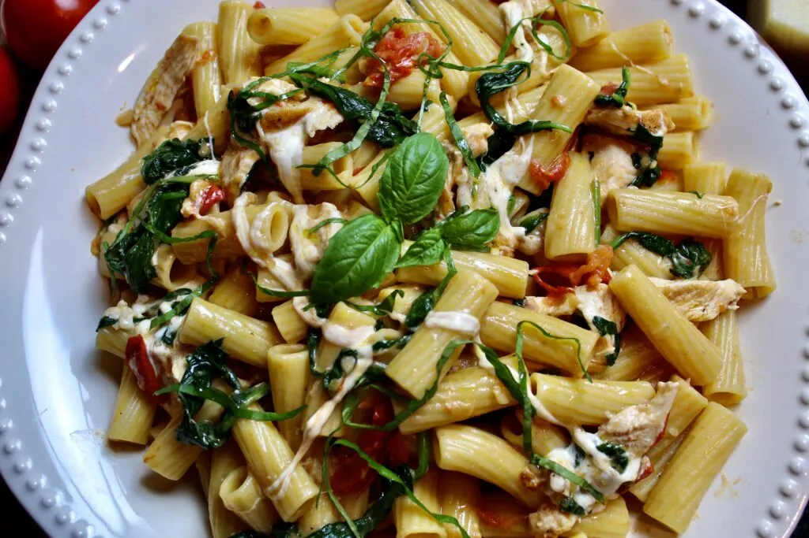

Rigatoni di Spago with Tomato, Spinach, and Mozzarella

Description
This dish had me at fresh tomatoes, spinach, and garlic! Add some perfectly roasted chicken breast, stringy mozzarella cheese, and pasta; and you’ve got a meal everyone will devour. This Rigatoni di Spago recipe may use super simple ingredients and preparation but, the results are incredible. It’s light but uncompromising in flavor with the rich tomato umami. A true pasta gem!
- If you’re a garlic lover, definitely use more in this dish! I’m a sucker for garlic and tomato, so I usually use more than the ingredients list specifies.
- It takes a minute or two to incorporate the cheese. I know it seems like all the cheese wants to clump together, but I just use two forks to separate the biggest ones.
- This dish would also be incredible with gnocchi instead of rigatoni.
- Depending on how much time you have, you could blanch and peel the tomatoes beforehand. This is totally optional though.
- If you’re in a pinch, you could definitely use frozen spinach for this recipe, but I would suggest trying to find fresh spinach.
Ingredients
- 1 pound chicken breast
- 2 tablespoons butter
- 1 tablespoon olive oil
- Salt and pepper
- 4 cloves garlic, minced
- 1 shallot, finely chopped
- 8 ounces spinach
- 2 large tomatoes, cut into large chunks
- *or 1 ½ cup of cherry tomatoes
- 1 ½ cup mozzarella balls
- 1 pound rigatoni pasta
- 2 tablespoons extra virgin olive oil
- A few leaves of fresh basil, chiffonaded
Steps
- Preheat the oven to 350°F.
- Season the chicken breast with salt and pepper to taste on both sides. Set aside.
- In an ovenproof skillet over medium-high heat, place 2 tablespoons of butter and 1 tablespoon of olive oil. When hot, carefully place in the chicken breast and cook until browned, about 3-5 minutes. Repeat with the other side.
- When adequately browned, place into the oven to finish cooking for 20-25 minutes, or until the internal temperature reaches 165°F. Set aside for at least 10 minutes before slicing into thin strips.
- In the meantime, while the chicken is cooking, bring a large pot of water to boil for the pasta. Heavily salt the water once it’s boiling.
- Cook pasta based on instructions--usually 8-10 minutes.
- In a large pan over medium-low heat, drizzle in a couple of tablespoons of olive oil. When hot, toss in the garlic and shallots and let it cook/infuse for a few minutes until fragrant and softened.
- Turn the heat up to medium and toss in the tomatoes. Let this cook down for 3-5 minutes and fold in the spinach. Let everything cook together for 2-3 minutes, or until the spinach has wilted. Turn off the heat and add in the chicken.
- In the same pan or in a large bowl, combine everything with the mozzarella, and toss until the cheese is evenly dispersed and stringy (‘spago’ means string in Italian). This may take a minute, but it's worth the extra couple seconds!
- Feel free to add a little pasta water if you need to thin the sauce out. Garnish with the chiffonaded basil.
- Serve and enjoy!